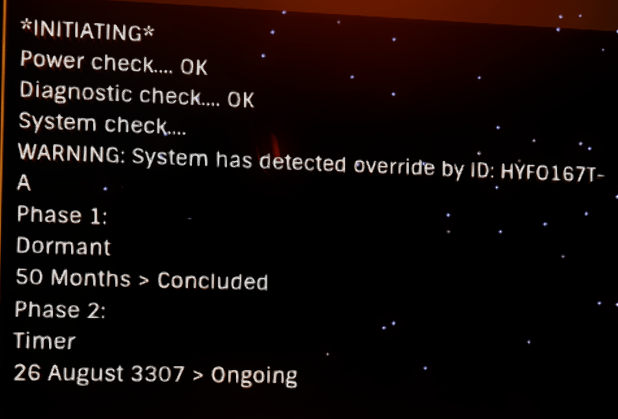
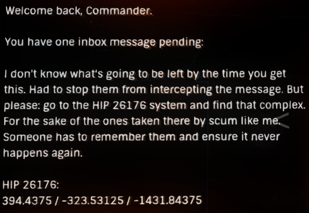

A wrecked Type 9 can be found in the Colonia system, on body 5 e a, at 29.2425, 39.1472
Some of its cargo of Brewer Corp boxes and Caine-Massey crates sprawled out behind it.
Until August 3307 the area was considered a trespass zone, and was guarded by a Goliath; local System Defence Force ships also occasionally patrol the area. Nothing of value has been found at the site; the only collectable object was an Unstable Data Core which does nothing when scanned or scooped. Since August 3307 the trespass area is not present, neither is the Unstable Data Core, though there are now canisters of metals.
The location of this crash site is revealed by the three listening posts:
LISTENING POST SIGNAL DATA
…Anomalous signal detected…Signal matches at listening post. Neche
What do you mean you mean you’ve lost him! I thought you said you had them.
Your orders are to track this guy and make sure he doesn’t talk to anyone about the operation.
Now get out there and find him. If I don’t hear reports that Commander Hyford has been killed in a unfortunate accident in the next 24 hours, then consider yourself a dead man.
…Signal Lost…
LISTENING POST SIGNAL DATA
…Anomalous signal detected…Signal matches at listening post. Colonia
This is Commander Hyford. To any independent pilots or security forces please help. I’m being tracked by mercs, they’re trying to kill me. Please help me.
I’ve manage to loose them for now, they seem to be tracking my comms and ship transponder so I’ve had to hack this listening post to get a message out.
I don’t know why they are after me. Must be something to do with that last shipment. A private military complex out in the Pleiades. Not Fed or Imperial. I was told not to ask questions, just get the job done and that’s what I did. I didn’t know it was going to put a target on my back.
I’m heading for Colonia. I know a place I can hide out there on one of the far moons 5 e a.
Please send help.
…Signal Lost…
LISTENING POST SIGNAL DATA
[Note: the coordinates were previously Lat:39.1472 Long:29.2425]
…Anomalous signal detected…
No Matching Signals.
This is Commander Hyford and I fear this might be my last I log entry. So far I’ve been able hide from them, but I don’t know how much longer I can go undetected.
I should never have left that message for help. They must have tracked me using the it somehow.
Well if this is it I’m not going quietly. There is a data cache at the following coordinates Lat:30.1113 Long:37.92. It contains all my ships log and data scans.
This is some kind of private military outfit, they operate outside the realm of the usual powers. I don’t know who they answer to but the chain goes up pretty high. They are monitoring for alien encounters and tech. People are going missing. They are taking them and running experiments. That’s what I was delivering. Escape pods full of people. I’m sorry for my part in this. It was a job that’s all. Oh god help me…
I’m out of time.
…Signal Lost..
It should be noted that the coordinates in the message are incorrect, as there is nothing of note at Lat: 30.1113 Long:37.92, Hyford’s Cache marker and ship wreck are approximately 13km’s away at Latitude:29.2424, Longitude:39.1470.
In July 3307 a scanable Comms Control was added with a new message:

This indicated that something would change on the 26 August 3307, and on that date another message was added when scanned:

HIP 26176 is near the bubble – it is in a region with many permit locked areas so can be difficult to navigate – from the bubble try heading to Shenve and then on to HIP 26176.
In HIP 26176 you can find a Listening Post (shown as Beacon in the Navigation Panel). The Oaken Point surface site (on A 5 i) is also in this system and should be visited. The Listening Post contains a message with some corruption.
LISTENING POST SIGNAL DATA
MESSAGE CORRUPTED. DECODING…
0123@5?789
Set the es]ape pod to …o.o.ou’ll f#nd a sh#p wa#t#ng
Travel to ]ol ?9 Se]tor J#-# ]10-@
#f you bel#eve #n anyth#ng # suggest you pray to #t
238.@?
MESSAGE ENDS
Note: Since November 3308, the message from this Listening Post has been missing.
The message has some minor “corruption”, however it is relatively easy to clean up.
The numbers at the start of the message are 0-9 in order, with 4 and 6 being corrupted with @ and ? respectively. Additionally, in the text part of the message, the letters c and i have also been corrupted, with ] and #. If we changed these corrupted characters back to the correct characters, we will have a more comprehensible message.
With that in mind, if we perform the following changes:
Our cleaned up message should now should read:
LISTENING POST SIGNAL DATA
MESSAGE CORRUPTED. DECODING…
0123456789
Set the escape pod to …o.o.ou’ll find a ship waiting
Travel to Col 69 Sector JI-I c10-4
If you believe in anything I suggest you pray to it
238.46
MESSAGE ENDS
The numbers at the end of these messages are distances, as the distance between the HIP 26176 system and the Col 69 Sector JI-I c10-4 system is 238.46 Ly’s.
If you travel to the Col 69 Sector JI-I c10-4 system, you will find another Listening Post (Beacon) orbiting body A 9, and again the message can be cleaned up.
LISTENING POST SIGNAL DATA
MESSAGE CORRUPTED. DECODING…
0=23!56789
I can’+ s+ay he£e +oo lon*. Don’+ feel safe…Li(e some+hin*’s abou+ +o appea£ in +he s(y any second
I’ve plo++ed a £ou+e +o W£e*oe D(-£ b!-=. No £eason fo£ me +o be +he£e
Mee+ me. Please don’+ be lon*
!!5.=0
MESSAGE ENDS
Once again, “corrupted” characters need to be replaced in order to get a clean message:
Our cleaned up message should now should read:
LISTENING POST SIGNAL DATA
MESSAGE CORRUPTED. DECODING…
0123456789
I can’t stay here too long. Don’t feel safe….Like something’s about to appear in the sky any second
I’ve plotted a route to Wregoe DK-R b4-1. No reason for me to be there
Meet me. Please don’t be long
445.10
MESSAGE ENDS
Travelling to the Wregoe DK-R b4-1 system is complicated by the nearby Col 70 permit locked area – first travel to the Outotz NQ-C c26-6 system and then onwards to the Wregoe DK-R b4-1 system, this should help avoid difficulties.
In the Wregoe DK-R b4-1 system, there is another Listening Post (Beacon) orbiting body 2, with another corrupted message that can be cleaned up.
LISTENING POST SIGNAL DATA
MESSAGE CORRUPTED. DECODING…
01234567%/
-u were ^uppo^ed to ?e here
-im trying. project i^nt going well. hard to get away.
-^crew the project! ^aid u would get me home
-im ^orry. one more ^top. ill [ind u I promi^e
-where
-^ynue[e G?-O c/-%
-ill try. im tired. ^cared to clo^e my eye^
-the dream^?
-ju^t meet me
-ill ?e there. i promi^e
376./0
MESSAGE ENDS
Again, “corrupted” characters need to be replaced in order to get a clean message
Our cleaned up message should now should read:
LISTENING POST SIGNAL DATA
MESSAGE CORRUPTED. DECODING…
0123456789
-u were supposed to be here
-im trying. project isnt going well. hard to get away
-screw the project! said u would get me home
-im sorry. one more stop. Ill find u I promise
-where
-Synuefe GB-O c9-8
-Ill try. Im tired. scared to close my eyes
-the dreams?
-just meet me
-ill be there. i promise
376.90
MESSAGE ENDS
Travelling on to the Synuefe GB-O c9-8 system, there is another Listening Post (Beacon), orbiting body 10 d, which can be cleaned up.
LISTENING POST SIGNAL DATA
MESSAGE CORRUPTED. DECODING…
01-345&789
Stenson suspects someone =elped ^ou escape. I can’t do an^thing t=at would draw suspicion
T=e^ reassigned me to =IP –4&0. =ave to go no questions asked
=ave embedded t=e s^stem permit code to t=is message. ^ou take it, give it to t=e press of aut=orities. W=atever ^ou want. But don’t ^ou ever come =ere
Run. Run as fast as ^ou can and never look back. I’m so sorr^ for ever^t=ing we did to ^ou
301.&&
MESSAGE ENDS
And again, “corrupted” characters need to be replaced in order to get a clean message
Our cleaned up message should now should read:
LISTENING POST SIGNAL DATA
MESSAGE CORRUPTED. DECODING…
0123456789
Stenson suspects someone helped you escape. I can’t do anything that would draw suspicion
They reassigned me to HIP 22460. Have to go no questions asked
Have embedded the system permit code to this message. You take it, give it to the press or authorities. Whatever you
want. But don’t you ever come here
Run. Run as fast as you can and never look back. I’m so sorry for everything we did to you
301.66
MESSAGE ENDS
Scanning this final Listening Post (Beacon) will give you the HIP 22460 permit, where you can find the Overlook megaship and Fort Asch, another site related to Oaken Point.